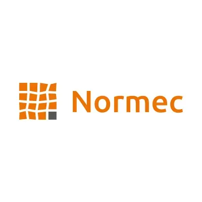
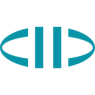
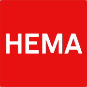
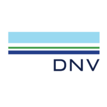
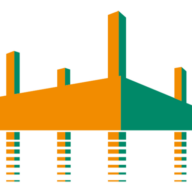
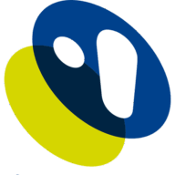

Publiek domein
Voor overheden, uitvoeringsorganisaties en maatschappelijke instellingen. Hier vragen posities om gevoel voor bestuurlijke verhoudingen, maatschappelijke opgaven en publieke verantwoording.
Executive Search, Recruitment en Interim Management — Amsterdam
Al meer dan 25 jaar vindt Andrea Waterman met haar team de juiste mensen voor directie-, management- en specialistische functies. Wij schakelen moeiteloos op elk niveau, van C-level en directie tot management. Snel, creatief en persoonlijk, want een mens is zoveel meer dan een cv. Wij geven niet op tot de juiste match gemaakt is.

Over ons
Na haar studie rechten in Leiden en een aantal jaren werken in de advocatuur werkte Andrea Waterman 10 jaar bij een gerenommeerd internationaal Executive Search-bureau. In 2007 begon zij haar eigen onderneming. Inmiddels heeft zij ruim 25 jaar ervaring in het vak. Waterman & Partners is actief in Executive Search, Recruitment en Interim Management.
Andrea luistert ook naar wat tussen de regels door wordt gezegd. “Er wordt vaak meer gezegd dan er verteld wordt. De kunst is dat op de juiste manier te vertalen.”
“Ik heb in al die jaren alle hoeken van de ring gezien,” zegt Andrea. “Juist daardoor weet ik wat werkt. Zoeken en verbinden is de rode draad in ons werk. Als je in dat enorme aanbod net die ene juiste match maakt, blijft dat iedere keer weer prachtig.”
Wij geven niet op tot de juiste kandidaat gevonden is, ook niet bij een lastige search.
Onze gesprekspartners zitten op alle niveaus. Wij schakelen net zo vanzelfsprekend met de raad van bestuur als met de HR-manager of de afdelingsdirecteur.
Wij doen het zoekwerk zelf. Zo vinden en toetsen wij snel de beste kandidaten.
Wij kijken verder dan het cv, want een mens is zoveel meer dan dat.
Vertrouwelijkheid voor kandidaat én opdrachtgever. Wij werken in de luwte en plaatsen geen benoemingen op sociale media.
Twee takken
Als generalist werken wij in beide domeinen. Elk domein kent een eigen dynamiek en cultuur, en eigen eisen.
Voor overheden, uitvoeringsorganisaties en maatschappelijke instellingen. Hier vragen posities om gevoel voor bestuurlijke verhoudingen, maatschappelijke opgaven en publieke verantwoording.
Voor het bedrijfsleven: van internationale ICT-dienstverleners en consultancy firms tot financiële dienstverlening, industrie, retail, Contract Research Organisaties en advocatuur. Ook organisaties waarin technologie een hoofdrol speelt, weten ons te vinden. Hier draait het om marktkennis, snelheid en kandidaten die direct waarde toevoegen.
Diensten
Voor C-level-, directie-, management- en sleutelposities zoeken en benaderen wij gericht hooggekwalificeerde kandidaten. Eerst brengen wij samen met u het profiel scherp in kaart. Uw kennis van de markt en onze ervaring als headhunter vormen samen de basis voor een doelgerichte en discrete search.
Via ons netwerk en onze eigen database benaderen wij kandidaten rechtstreeks. Ook kandidaten die niet actief zoeken, want die zijn vaak het interessantst. Na een of meer gesprekken stellen wij u alleen kandidaten voor in wie wij echt geloven.
Voor Sales-, Marketing-, Finance-, Lead- en specialistische rollen die snel en goed ingevuld moeten worden. Wij zetten de middelen in die passen bij uw vacature: websearch, onze database of een advertentie. De aanpak bepalen we samen.
Na een eerste selectie stellen wij u een aantal kandidaten voor. U kiest wie u wilt ontmoeten.
Is uw afdeling tijdelijk overbelast, zit u midden in een verandertraject of mist u specifieke expertise? Wij leveren snel een ervaren interim-professional die het probleem oplost. Al onze interimmers zijn hoogopgeleid, zelfstandig ondernemer en hebben minimaal vijf jaar relevante ervaring.
Meer weten? Mail naar info@watermanpartners.nl of bel 06 - 21838892.
Opdrachtgevers
Onze opdrachtgevers zijn nationaal en internationaal georiënteerde organisaties, zowel profit als non-profit. Onze gesprekspartners vindt u op alle niveaus: van CEO en raad van bestuur tot directie, management en HR. Wij spreken hun taal en schakelen snel tussen strategie en praktijk.
Sommige opdrachtgevers werken al jaren met ons samen. Daar zijn wij zuinig op, want hoe beter wij een organisatie kennen, hoe sneller en soepeler wij vacatures vervullen.
Voor posities op het hoogste niveau zetten wij Executive Search in. Voor overige vacatures gebruiken wij Recruitment, en voor tijdelijke opdrachten Interim Management.

Normec
SRC
HEMA
DNV
Combifloat
IntravaccAanbevelingen
“What sets Andrea apart is her talent for identifying the qualities, motivations, and personality traits that make someone a great fit for a role, a team, and the company culture. Her personal approach, combined with strong intuition and professionalism, consistently results in high-quality and lasting matches.”
“Andrea heeft mij ooit gevonden toen TNO een algemeen directeur voor de divisie Defensie & Veiligheid zocht. Sindsdien hebben we altijd contact gehouden. Andrea heeft de gave om mensen en organisaties — zowel in de private als in de publieke sector — bij elkaar te brengen. Ze erkent talent, regelt bijzondere ontmoetingen en geeft niet op. Doortastendheid, humor en zonnestralen zijn haar geheime wapens.”
“Andrea is a very enthusiastic, approachable and caring person. She is a real goal-getter. We have worked on many different cases and she was always able to deliver. I would highly recommend Andrea for headhunting activities.”
“Andrea managed to find top-quality candidates for even the most specialized key positions within our company, demonstrating her deep industry knowledge and commitment to client success.”
“De kwaliteit van een headhunter bewijst zich altijd weer als het een lastige search is. Andrea blijft doorgaan tot de juiste persoon gevonden is.”
Vacatures
Wij werken op dit moment aan diverse vacatures. Vanwege het vertrouwelijke karakter publiceren wij deze niet op onze site. Wilt u meer weten? Mail naar info@watermanpartners.nl of bel Andrea Waterman op 06 - 21838892.
Stuur uw cv
Wij maken graag kennis. Stuur uw cv (Word of PDF, maximaal 1 MB) naar vacatures@watermanpartners.nl. Wij nemen zo snel mogelijk contact met u op.
Stuur uw cvContact
Heeft u een vacature die haast heeft, of wilt u eerst vrijblijvend sparren? Bel of mail ons gerust. Een goed gesprek is altijd het begin.
Waterman & Partners Executive Search
Koninginneweg 40B
1075 CZ Amsterdam
Mobiel: 06 - 21838892
E-mail: info@watermanpartners.nl
Cv's: vacatures@watermanpartners.nl
KvK: 34227168